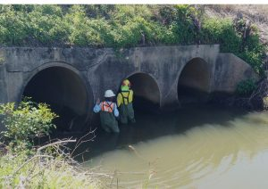
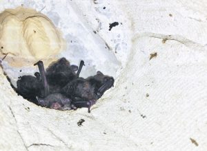

A tidal culvert north of Woodburn in northern NSW subject to proposed upgrade works by the (then) Roads and Maritime Services, was found by Greenloaning to support a large number of the Southern Myotis.
The Southern Myotis (Myotis macropus), also known as the ‘Fishing Bat,’ is a microbat listed as Vulnerable under the Biodiversity Conservation Act 2016 (NSW). The species is water dependent for foraging and roosts thus tend to be located near, or over water. Priority actions to facilitate conservation of the species in NSW include identifying, protecting and enhancing roost habitat beneath/in artificial structures (eg bridges, culverts), and assessing the effectiveness of these procedures.
The species was mostly occupying hidden crevices and cavities created by the deterioration of the culvert lining. Alison Martin, director of Greenloaning, prepared a Bat Management Plan, which set out provisions for the process of excluding the bats from the culvert to allow works to proceed, complicated by the tidal nature of the culvert. Concurrently, alternative habitat for the species, in the form of bat boxes was provided close to the culvert and also in a nearby bridge that also supported large numbers of Myotis.

Culvert relining encompassed provision of additional bat roosts within the culvert structure. Monitoring of the outcomes indicated that some Myotis returned to the culvert to breed and there was positive uptake of the specifically designed bat boxes beneath the bridge. The study highlighted the importance of adopting a precautionary approach when assessing the likelihood of occurrence of microbat species within infrastructure.